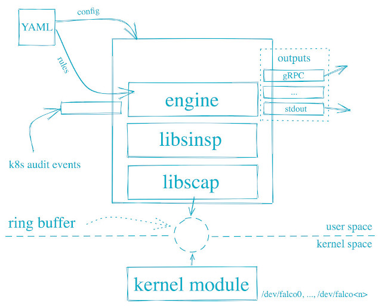

參考資訊：
https://falco.org/blog/choosing-a-driver/
https://v0-26.falco.org/docs/getting-started/
https://falco.org/docs/getting-started/installation/
Kernel driver(builtin or eBPF)、K8s aduti event是兩個用來提供Event的來源，提供的Event會經由中間的區塊(engine、libsinsp、libscap)做處理，主要是做Event分類以及Rule Match，Event分類是用來將對應的Event分類到對應的Field Class， Field Class是經過整理後的Class，如：evt.type代表Event Type，evt就是一個Field Class，值得注意的是，Falco的設定檔案和Rules都是基於yaml格式，如左上角顯示的區塊，經過Rule Match後的結果可以透過設定，導到stdout、RPC Server等介面，如右邊顯示的區塊，整體架構算是簡單易用
